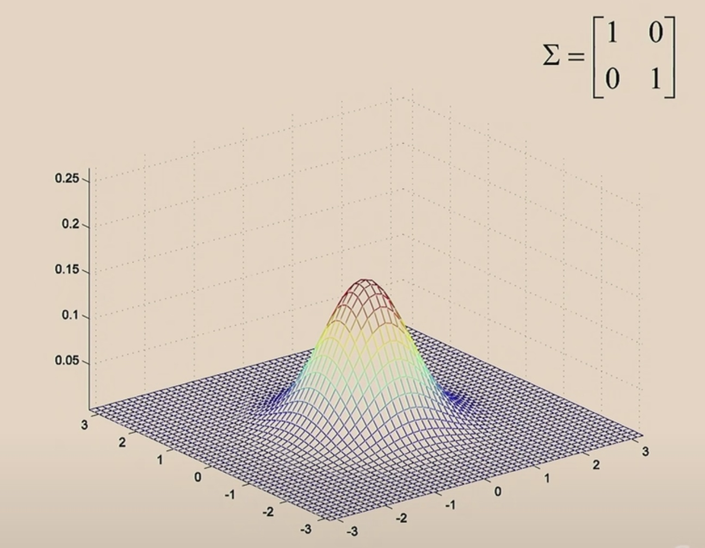
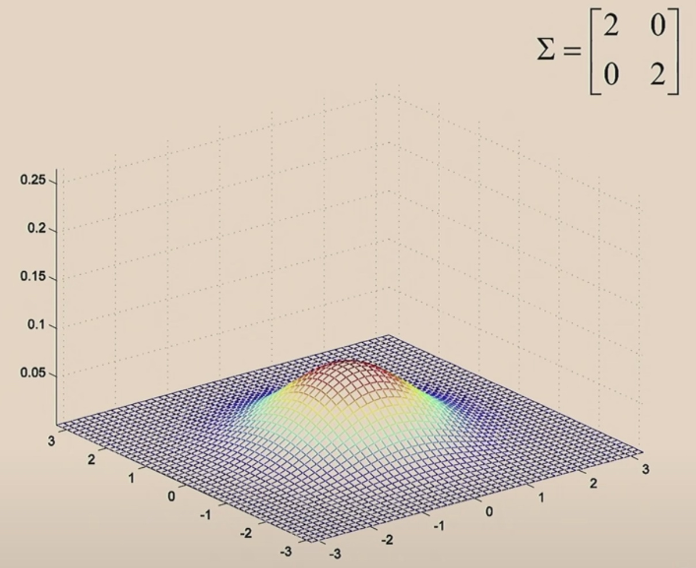
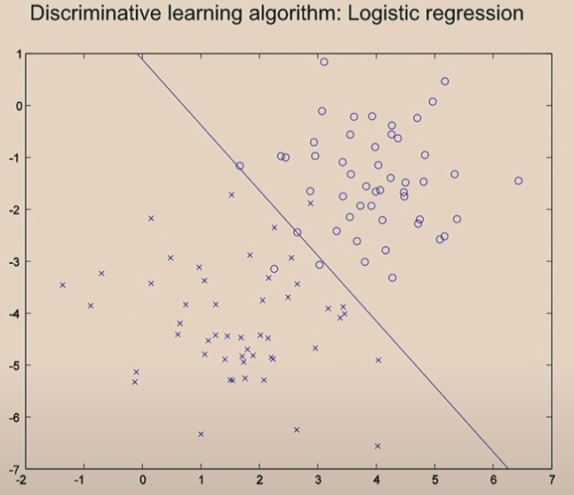

All algorithms we have learnt so far are called discriminative learning algotithms.
Today we will show you how generative learning algorithms work.
Generative VS Discrimitative Comparison
Not like in logistic regression really searching a separation and searching the maximum likelihood the way we saw last weeks.
Let's see the malignant tumors and benign tumors. Now the we just two eclipses to contain maliganant tumors and benign tumors and build two models. When we see new tumors, we just compare it with the two models and see it look more like which one.
Discriminative Algorithm
Learn \(p(y|x)\). Or just learn some mapping from x to y directly \(h_{\theta}(x)=\left\{\begin{array}{l} 0 \\ 1 \end{array}\right.\) We may use in SVM later.
Generative Learning Algorithm
Learn \(p(x|y)\), which means what would the features look like given the class. i.e. Given the tumors benign, what will the x gonna be like; given the tumors malignant. what would the x gonna be like.
The algorithm will also learn \(p(y)\), which is also called class prior.(Before the patients walks into your office, what are the odds that their tymor is malignant versus benign.)
Then we can use Bayes rule.
\[p(y=1|x) = \frac {p(x|y=1)\cdotp(y=1)}{p(x)}
\]
Where
\[p(x) = p(x|y=1)p(y=1) +p(x|y=0)p(y=0)
\]
Gaussian Discriminant Analysis (GDA)
A simpler and more computationally efficient algorithm to implement insome cases. Sometimes work better when we have very small data sets.
We are gonna use \(x\in \mathbb{R}^n\)(drop \(x_0=1\) c onvention)
Assume \(p(x|y)\) is Gaussian.
Multivariable Gaussian
\[z \sim N(\vec{\mu},\sigma)
\]
\(\mu\) is the mean vector(\(\mathbb{R}^n\)) and \(\sigma\)(\(\mathbb{R}^{n\times n}\)) is the covariance matrix. And \(z\in \mathbb{R}^n\)
\[\mathrm{E}[X]=\int_{x} x p(x ; \mu, \Sigma) d x=\mu
\]
\[Cov(Z) = E[(Z-E[Z])(Z-E[Z])^T ] = E[ZZ^T]-(E[Z])(E[Z])^T
\]
\[p(x ; \mu, \Sigma)=\frac{1}{(2 \pi)^{d / 2}|\Sigma|^{1 / 2}} \exp \left(-\frac{1}{2}(x-\mu)^{T} \Sigma^{-1}(x-\mu)\right)
\]
The Multi Gaussian has two parameters: \(\mu\) and \(\sigma\), which control the mean ans the variance of the density.
\(\mu\) now is a two-dimensinal parameter, and which is (0,0), which is why the Gaussian bump is centered at 0.
The covariance \(\Sigma=\left[\begin{array}{ll} 1 & 0 \\ 0 & 1 \end{array}\right]\) is the identity matrix.

Then we are gonna to shrink it. Let's take a covariance marix and multiply it by a number less than 1.
The the PDF becomes taller, since the integration under the function is always to 1.
Then we will make it wider.

When we make off-diagonal values in \(\Sigma\) from 0 to 0.5.
0.8
Let's see the contours.
These should be perfectly round circles.
When covariance matrix is identity matrix, z1 and z2 are uncorrelated.
When we increase the off-diagonal, z1 and z2 become positively correlated.
When we make the off-diagonal negative values, then z1 and z2 will be negative correlated.
Every covariance matrix is symmetric.
Let's move \(\mu\) around.
GDA Model
We have a classification problem in which the input features x are continuous-valued random variables, we then use GDA model.
\(\begin{aligned} y & \sim \operatorname{Bernoulli}(\phi) \\ x \mid y=0 & \sim \mathcal{N}\left(\mu_{0}, \Sigma\right) \\ x \mid y=1 & \sim \mathcal{N}\left(\mu_{1}, \Sigma\right) \end{aligned}\)
The Distributions
\[\begin{aligned}
p(y) &=\phi^{y}(1-\phi)^{1-y} \\
p(x \mid y=0) &=\frac{1}{(2 \pi)^{d / 2}|\Sigma|^{1 / 2}} \exp \left(-\frac{1}{2}\left(x-\mu_{0}\right)^{T} \Sigma^{-1}\left(x-\mu_{0}\right)\right) \\
p(x \mid y=1) &=\frac{1}{(2 \pi)^{d / 2}|\Sigma|^{1 / 2}} \exp \left(-\frac{1}{2}\left(x-\mu_{1}\right)^{T} \Sigma^{-1}\left(x-\mu_{1}\right)\right)
\end{aligned}
\]
The Parameters
\(\mu_0,\mu_1, \Sigma,\phi\)
We use the same Sigma for both classes, but we use diffrent means for two Gaussian.
Then we can use the Bayes to compute \(p(y=1|x)\).
Training
-
The training set: \(\{x^{(i)},y^{(i)}\}^m_{i=1}\)
-
We will do convergence according joint likelihood. The log-likelihood of the data will be like
\(\begin{aligned} \ell\left(\phi, \mu_{0}, \mu_{1}, \Sigma\right) &=\log \prod_{i=1}^{n} p\left(x^{(i)}, y^{(i)} ; \phi, \mu_{0}, \mu_{1}, \Sigma\right) \\ &=\log \prod_{i=1}^{n} p\left(x^{(i)} \mid y^{(i)} ; \mu_{0}, \mu_{1}, \Sigma\right) p\left(y^{(i)} ; \phi\right) \end{aligned}\)
-
Whereas in the discrimination. Conditional likelihood:
-
\(L(\theta) = \prod^m_{i=1}p(y^{(i)}|x^{(i)};\theta)\)
-
In discriminative, we are going to choose \(\theta\) that maximize p of y given x.
-
But for generative learning algorithms, we are going to choose parameters maximize p of x and y.
By maximizing l with respect to the parameters, we take derivatives and set derivatives equal to 0. Then find the maximum likelihood estimate of the parameters to be:
\[\begin{aligned}
\phi &=\frac{1}{n} \sum_{i=1}^{n} 1\left\{y^{(i)}=1\right\} \\
\mu_{0} &=\frac{\sum_{i= 1}^{n} 1\left\{y^{(i)}=0\right\} x^{(i)}}{\sum_{i=1}^{n} 1\left\{y^{(i)}=0\right\}} \\
\mu_{1} &=\frac{\sum_{i=1}^{n} 1\left\{y^{(i)}=1\right\} x^{(i)}}{\sum_{i=1}^{n} 1\left\{y^{(i)}=1\right\}} \\
\Sigma &=\frac{1}{n} \sum_{i=1}^{n}\left(x^{(i)}-\mu_{y^{(i)}}\right)\left(x^{(i)}-\mu_{y^{(i)}}\right)^{T} .
\end{aligned}
\]
- \(\phi\) is the estimate of probability of y being equal to 1. (Just like count up the fraction of heads you got.)
- Indicator notation: \( 1\left\{true\right\} = 1, 1\left\{false\right\} = 0\)
- \(\mu_0\) comes from
- The denomitor is the total number of benign tumors in your training set.
- The nominator is the sum of feature vectors for all the examples with y = 0.
- \(\mu_1\) is the same.
- The \(\Sigma\) try to fit the contour to the eclipse.
Prediction
arg notation: \(\min_z (z-5)^2 = 0\), then \(\arg\min_z(z-5)^2 = 5\). The argment is the value we need to achieve the maximum or minimum.
If we want to predict the most likely class label.
\[\arg \max _{y} p(y \mid x) = \arg \max _{y} \frac{p(x|y)p(y)}{p(x)}
\]
To y, p(x) is just a constant. So
\[\begin{aligned}
\arg \max _{y} p(y \mid x) &= \arg \max _{y} \frac{p(x|y)p(y)}{p(x)}
\\
&= \arg \max_y p(x|y)p(y)
\end{aligned}
\]
Difference between Discriminative Learning Algorithm and Generative Learning Algorithm in an Example
Discriminative Algorithm
Using gradient descend, we start here.
Then with one iteration, we move the line.
Two iterations
After 20 iterations, it will converage.

Generative Algorithm
What is worth mentioning is the covariance is the same in two Gaussians.
The green line comes from the logistic regression.
Since we use the same covariance in Gaussians, we will finally get one straight line. If not, we will not get straight line.
Comparison GDA to Logistic Regression
For fixed \(\phi, \mu_0, \mu_1, \Sigma\), let's plot \(p(y=1|x;\phi,\mu_0,\mu_1, \Sigma)\) as a function of x.
\[\begin{aligned}
&p(y=1|x;\phi,\mu_0,\mu_1, \Sigma)
\\=&\frac{p(x|y=1;\mu,\Sigma)p(y=1;\phi)}{p(x;\phi,\mu_0.\mu_1,\Sigma)}
\end{aligned}
\]
\(p(x|y=1;\mu,\Sigma)\) is just a number, \(p(y=1;\phi)\) is a Bernoulli probability, so it is equal to \(\phi\).
Let's see the 1D dataset.
We will find the shape turns out that is exactly a shaped sigmoid function.
GDA is stronger assumptions and logistic regression is weaker assumptions.
If we make strongly modeling assumptions, and the assumptions are roughly correct, then model will do better, since we are telling more information to algorithm.
Let's see
\[\begin{aligned}
&x|y=1 \sim Poisson(\lambda_1)\\
&x|y=0 \sim Poisson(\lambda_0)\\
&y\sim Ber(\phi)
\end{aligned}
\]
We can also get \(p(y=1|x)\) is logistic.
This is true for any generalized linear model.
That means, if our model is fitted by Gaussian or Poisson, we can use logistic regression. But if our data is Gaussian and we use Poisson, then it will behave poorly.
So when out dataset is really big, we may choose to use logistic. But when we are using a small compact database, Gaussian is a really good choice.
The algorithm has two sources of knowledge, one is what did you tell it, the other is1 what you learnt from the data.
GDA is a very efficient model.
Naive Bayes
One more generative learning algorithm
Given a piece of email, can you classify this is a spam or not?
-
First, we take a piece of email and first map it to a feature vector x. Maybe look up in email and find top 10000 words as our training set.
\(x\in\{0,1\}^n\)
\(x_i=1\{\text{word i appears in email}\}\)
We want to model p(x|y), p(y). There are \(2^{1 0000}\) possible values of x.
Assume \(x_i\) are conditionally independent given y.
-
By the chain rule property,
\[ \begin{aligned}
p(x_{1,...,10000}|y) &= p(x_1|y)p(x_2|x_1,y)p(x_3|x_1,x_2,y)...p(x_{10000}...)\\
&\stackrel{assume}{=} p(x_1|y)p(x_2|y)...p(x_{10000}|y)\\
&=\prod ^d_{j=1}p(x_j|y)
\end{aligned}
\]
Parameters
\(\phi_{j|y=1} = p(x_j=1|y=1)\) If it is a spam email, what's the chance of xj occur in the spam email
\(\phi_{j|y=0} = p(x_j=1|y=0)\)
\(\phi_y=p(y=1)\)
So the joint likelihood of these parameters is
\[\mathcal{L}\left(\phi_{y}, \phi_{j \mid y=0}, \phi_{j \mid y=1}\right)=\prod_{i=1}^{n} p\left(x^{(i)}, y^{(i)}\right)
\]
Then the MLE would be
\[\begin{aligned}
\phi_{j \mid y=1} &=\frac{\sum_{i=1}^{n} 1\left\{x_{j}^{(i)}=1 \wedge y^{(i)}=1\right\}}{\sum_{i=1}^{n} 1\left\{y^{(i)}=1\right\}} \\
\phi_{j \mid y=0} &=\frac{\sum_{i=1}^{n} 1\left\{x_{j}^{(i)}=1 \wedge y^{(i)}=0\right\}}{\sum_{i=1}^{n} 1\left\{y^{(i)}=0\right\}} \\
\phi_{y} &=\frac{\sum_{i=1}^{n} 1\left\{y^{(i)}=1\right\}}{n}
\end{aligned}
\]
It is an efficient algorithm.